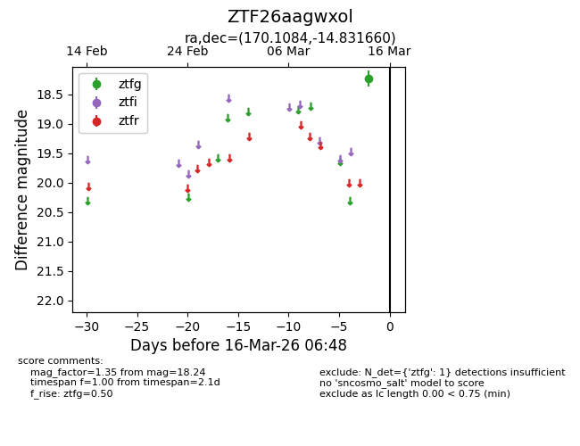
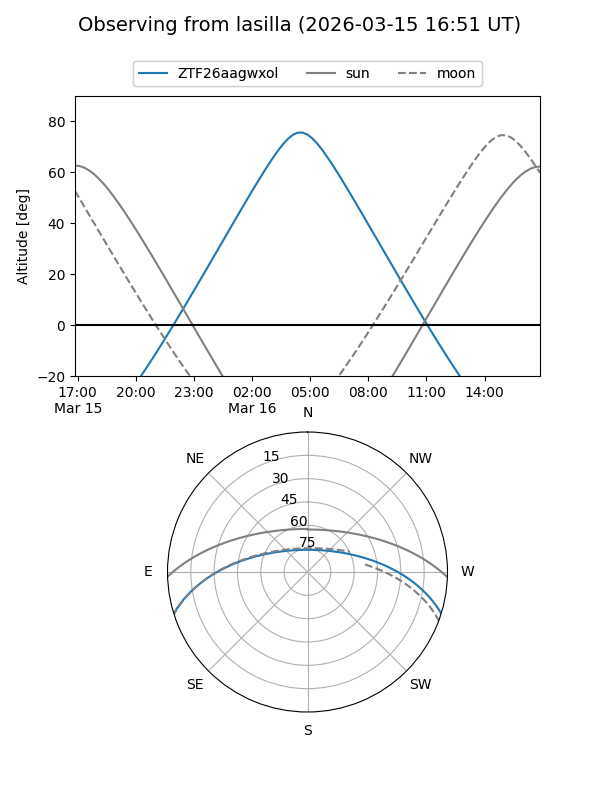
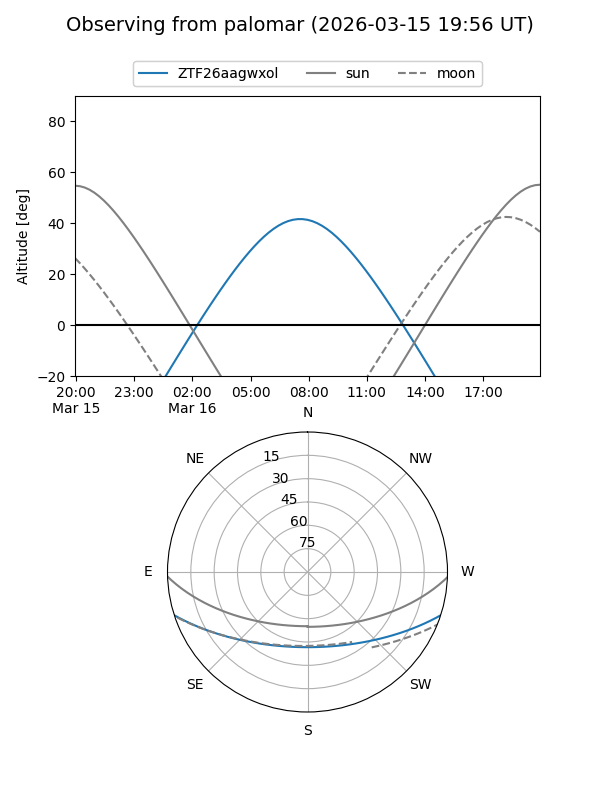

ZTF26aagwxol
Target ZTF26aagwxol at 2026-03-16 06:50
Aliases and brokers:
FINK: link
Lasair: link
ALeRCE: link
alt names
ZTF26aagwxol (ztf,fink_ztf)
Coordinates:
equatorial (ra, dec) = 170.1084,-14.83166
equatorial (HMS+DMS) = 11:20:26.01,-14:49:53.98
galactic (l, b) = (272.4182,+42.58422)
Flags:
Photometry:
last ztfg=18.24
1 ztfg detections
Lightcurve

Visibility


Additional plots